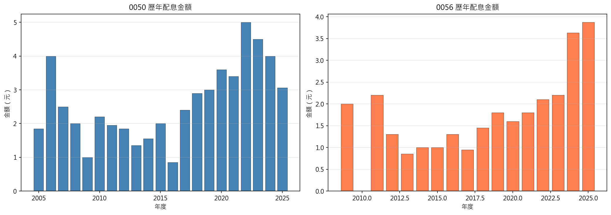
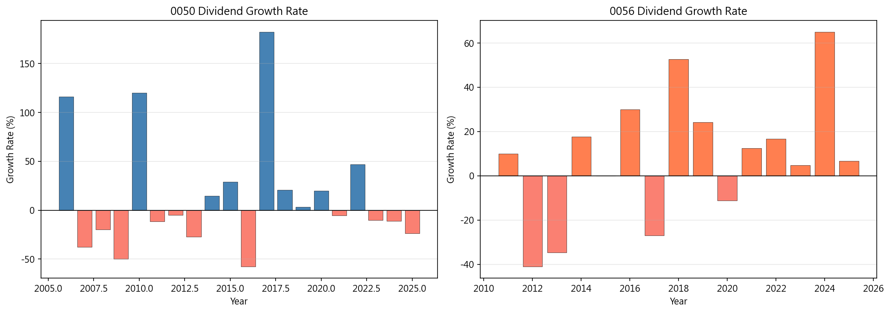
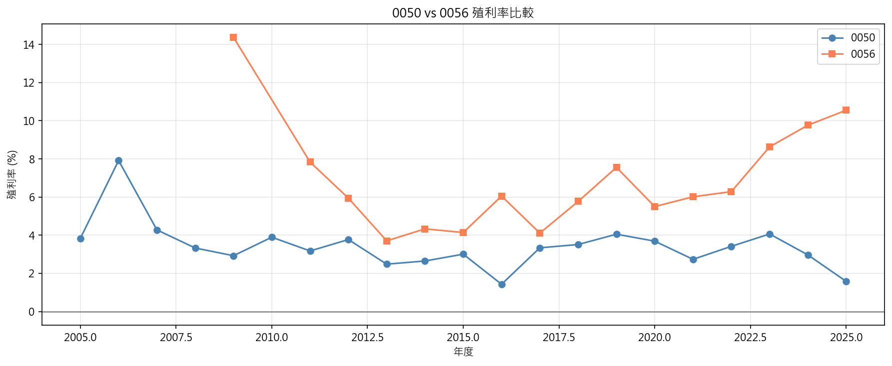
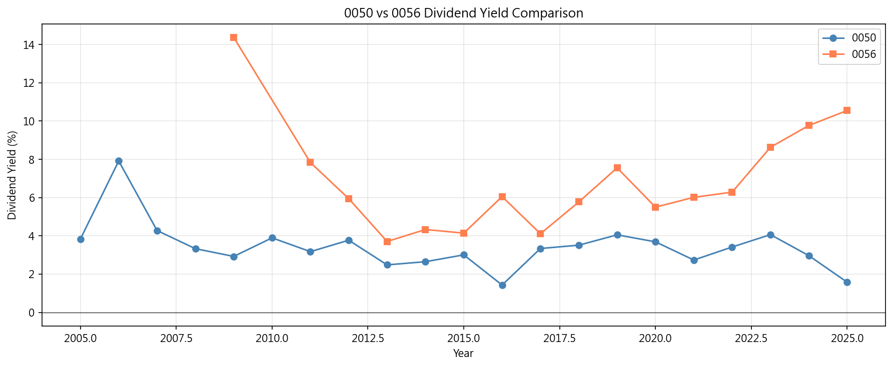
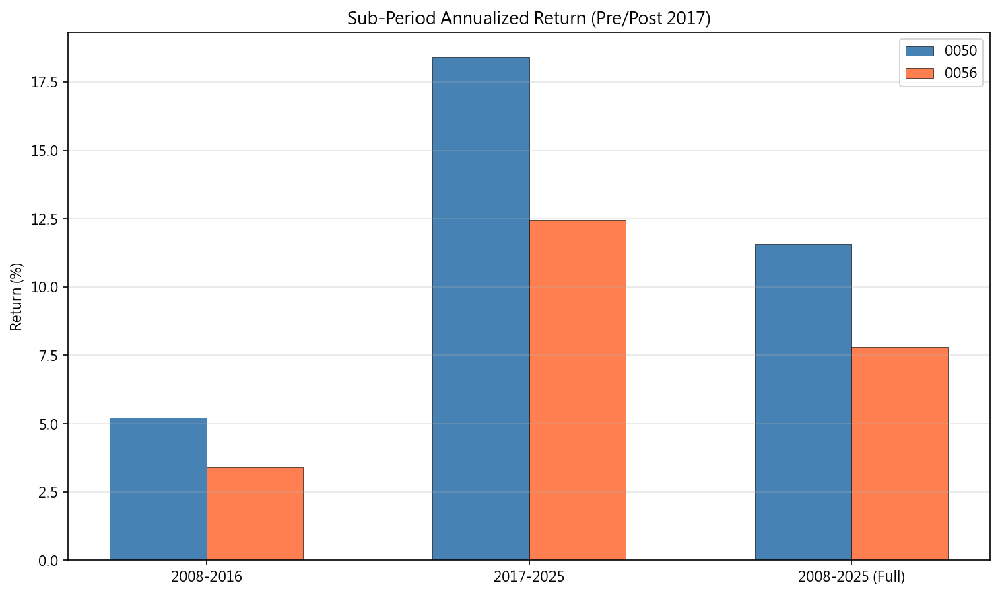
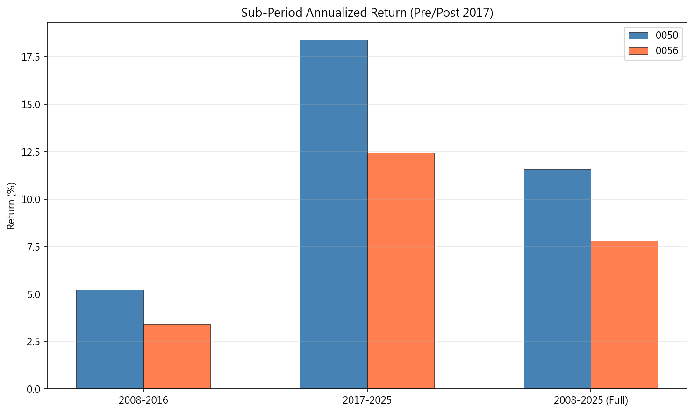

附錄Appendix
A.1 股息穩定性比較A.1 Dividend Stability Comparison
下表比較 0050 與 0056 的股息穩定性指標。變異係數（CV）越低表示股息越穩定。
The table below compares dividend stability metrics for 0050 and 0056. Lower CV indicates more stable dividends.
| ticker | cv | mean | std | min | max | n_years |
|---|---|---|---|---|---|---|
| 50 | 0.4369 | 2.6171 | 1.1435 | 0.8500 | 5.0000 | 21 |
| 56 | 0.4855 | 1.8157 | 0.8815 | 0.8500 | 3.8720 | 16 |
A.2 年度配息明細A.2 Annual Dividend Details
 A.3 殖利率時序A.3 Dividend Yield Time Series
A.4 含息 vs 不含息走勢A.4 Total Return vs Price Return
下圖比較含息（adj_close）與不含息（close, 拆股調整後）的走勢，視覺化股息在長期累積中的貢獻。兩線之間的差距代表股息再投入的累積效果。
The chart below compares total return (adj_close) vs price-only return (split-adjusted close), visualizing dividend contribution to long-term accumulation. The gap between the two lines represents the cumulative effect of dividend reinvestment.
A.5 稅務情境完整表格A.5 Complete Tax Scenario Table
下表列出三種稅務情境（免稅、退休族、高所得）下的詳細報酬比較。
The table below shows detailed return comparisons across three tax scenarios (tax-free, retiree, high income).
| scenario | ticker | ann_gross_return | ann_after_tax_return | tax_amount | tax_drag_ann |
|---|---|---|---|---|---|
| tax_free | 50 | 0.1154 | 0.1154 | 0.0000 | 0.0000 |
| tax_free | 56 | 0.0524 | 0.0524 | 0.0000 | 0.0000 |
| retiree | 50 | 0.1154 | 0.1148 | 64,895 | 0.0006 |
| retiree | 56 | 0.0524 | 0.0518 | 23,806 | 0.0006 |
| high_income | 50 | 0.1154 | 0.1066 | 926,060 | 0.0087 |
| high_income | 56 | 0.0524 | 0.0438 | 339,711 | 0.0086 |
A.6 多起始年份退休模擬A.6 Multi-Start Retirement Simulation
下表列出各起始年份的 10 年退休模擬結果，比較 0056 領息與 0050 賣股策略的最終合計金額。
The table below shows 10-year retirement simulation results for each start year, comparing 0056 dividend strategy vs 0050 sell strategy total values.
| start_year | div_strategy_total | sell_strategy_total | div_cumulative_income | sell_cumulative_income | div_final_portfolio | sell_final_portfolio | sell_wins |
|---|---|---|---|---|---|---|---|
| 2008 | 1,382,524 | 1,177,799 | 411,650 | 411,650 | 970,874 | 766,148 | False |
| 2009 | 2,585,489 | 2,024,499 | 865,661 | 865,661 | 1,719,828 | 1,158,838 | False |
| 2010 | 1,737,021 | 1,471,883 | 504,255 | 504,255 | 1,232,766 | 967,627 | False |
| 2011 | 1,545,034 | 1,619,714 | 478,818 | 478,818 | 1,066,216 | 1,140,896 | True |
| 2012 | 2,131,170 | 2,418,797 | 596,435 | 596,435 | 1,534,735 | 1,822,362 | True |
| 2013 | 1,710,240 | 1,816,256 | 603,486 | 603,486 | 1,106,754 | 1,212,770 | True |
| 2014 | 2,278,042 | 1,967,784 | 658,294 | 658,294 | 1,619,749 | 1,309,490 | False |
| 2015 | 2,257,143 | 2,194,880 | 738,302 | 738,302 | 1,518,841 | 1,456,578 | False |
A.7 統計檢定彙整A.7 Statistical Tests Summary
所有假說檢定結果彙整於下表。包含 t 統計量、p 值、效果量（Cohen's d）及 Bootstrap 信賴區間。
All hypothesis test results are summarized below, including t-statistics, p-values, effect sizes (Cohen's d), and Bootstrap confidence intervals.
A.8 子期間報酬比較表A.8 Sub-Period Return Comparison
下表分別列出 2008-2016（科技股暴漲前）、2017-2025（暴漲後）及全期間的年化報酬率、股息報酬、價格報酬分解。此分析用於評估 0050 vs 0056 比較結論的制度依賴性。
The table below shows annualized returns, dividend returns, and price return decomposition for pre-2017, post-2017, and full periods. This analysis assesses the regime dependence of the 0050 vs 0056 comparison.
| period | ticker | years | ann_return | price_return | dividend_return | dividend_contribution |
|---|---|---|---|---|---|---|
| pre_break | 50 | 9.0000 | 0.0521 | -1.1443 | 1.7238 | 2.9746 |
| pre_break | 56 | 9.0000 | 0.0340 | -0.5977 | 0.9485 | 2.7036 |
| post_break | 50 | 8.9000 | 0.1841 | 2.1625 | 1.3312 | 0.3810 |
| post_break | 56 | 8.9000 | 0.1245 | 0.9726 | 0.8667 | 0.4712 |
| full | 50 | 17.9 | 0.1158 | 3.0533 | 3.0550 | 0.5001 |
| full | 56 | 17.9 | 0.0781 | 1.0264 | 1.8152 | 0.6388 |
 

A.9 子期間退休模擬比較A.9 Sub-Period Retirement Simulation
分別以 2008 和 2017 為起點進行退休模擬，驗證「0050 一定比 0056 好」的結論是否在所有市場制度下成立。結果顯示，2008-2016 年 0056 領息策略合計 1,270,680 元，勝過 0050 賣股策略的 1,074,719 元。
Retirement simulations starting from 2008 and 2017 respectively test whether '0050 always beats 0056' holds across all market regimes. Results show in 2008-2016, 0056 dividend strategy totaled NT$1,270,680, outperforming 0050 sell strategy's NT$1,074,719.
A.10 「左手換右手」長期追蹤A.10 "Left Hand to Right Hand" Long-Term Tracking
下圖追蹤 0056 自 2008 年以來的實際收盤價、假設龐氏情境（初始價格逐次扣除累計配息）以及含息總價值。若配息真為「左手換右手」（本金侵蝕型），灰色虛線應反映實際走勢。事實是 0056 累計配出 29.05 元（為初始股價的 113%），但股價仍正成長，含息總價值更達 64.20 元。
The chart tracks 0056's actual close, hypothetical Ponzi scenario (initial price minus cumulative dividends), and total value (close + cumulative dividends) since 2008. If dividends were truly 'left hand to right hand' (principal erosion), the gray dashed line should reflect reality. In fact, 0056 distributed 29.05 per share (113% of initial price), yet price still grew, and total value reached 64.20.